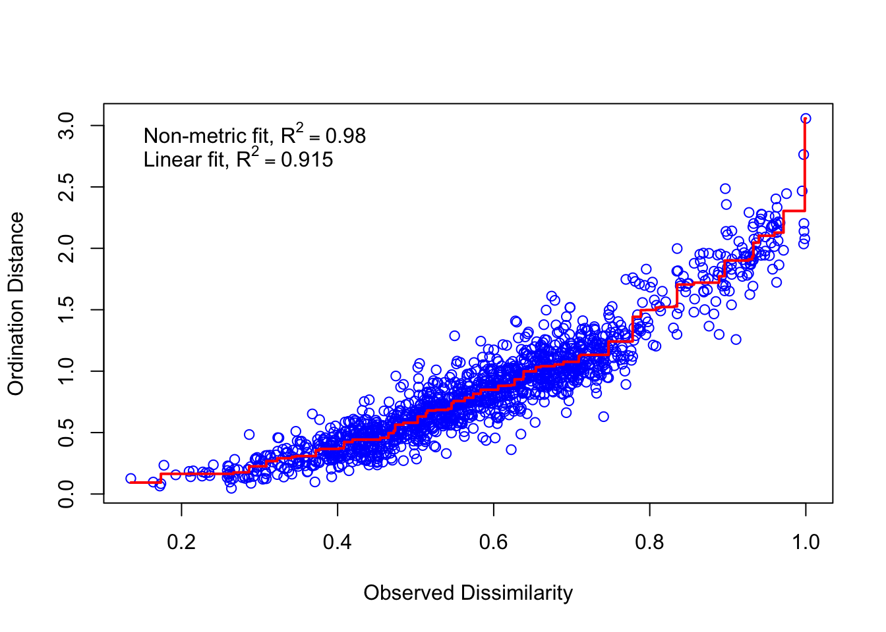
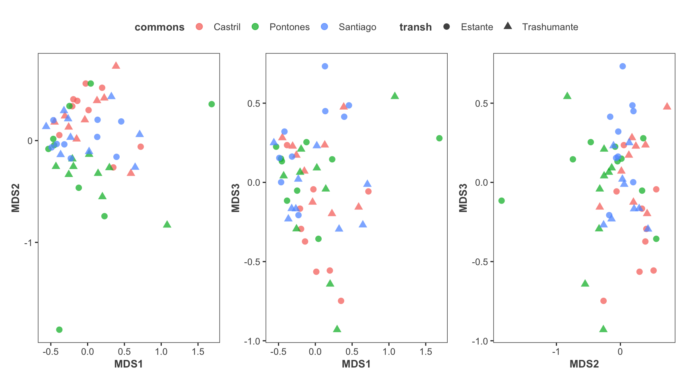
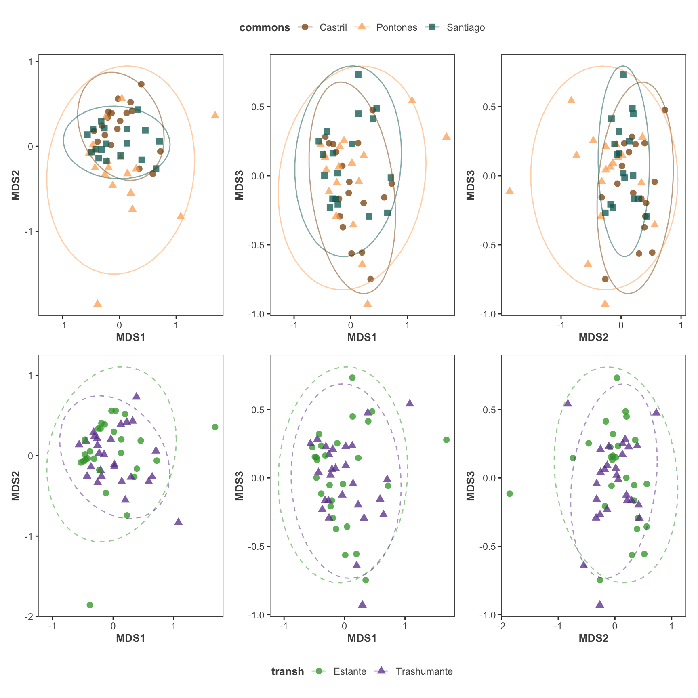

Last updated: 2022-10-19
Checks: 7 0
Knit directory:
human_ecology/
This reproducible R Markdown analysis was created with workflowr (version 1.7.0). The Checks tab describes the reproducibility checks that were applied when the results were created. The Past versions tab lists the development history.
Great! Since the R Markdown file has been committed to the Git repository, you know the exact version of the code that produced these results.
Great job! The global environment was empty. Objects defined in the global environment can affect the analysis in your R Markdown file in unknown ways. For reproduciblity it’s best to always run the code in an empty environment.
The command set.seed(20220620) was run prior to running the code in the R Markdown file.
Setting a seed ensures that any results that rely on randomness, e.g.
subsampling or permutations, are reproducible.
Great job! Recording the operating system, R version, and package versions is critical for reproducibility.
Nice! There were no cached chunks for this analysis, so you can be confident that you successfully produced the results during this run.
Great job! Using relative paths to the files within your workflowr project makes it easier to run your code on other machines.
Great! You are using Git for version control. Tracking code development and connecting the code version to the results is critical for reproducibility.
The results in this page were generated with repository version 21a2f4d. See the Past versions tab to see a history of the changes made to the R Markdown and HTML files.
Note that you need to be careful to ensure that all relevant files for the
analysis have been committed to Git prior to generating the results (you can
use wflow_publish or wflow_git_commit). workflowr only
checks the R Markdown file, but you know if there are other scripts or data
files that it depends on. Below is the status of the Git repository when the
results were generated:
Ignored files:
Ignored: .Rhistory
Ignored: .Rproj.user/
Unstaged changes:
Modified: code/aux_functions.R
Note that any generated files, e.g. HTML, png, CSS, etc., are not included in this status report because it is ok for generated content to have uncommitted changes.
These are the previous versions of the repository in which changes were made
to the R Markdown (analysis/nmds.Rmd) and HTML (docs/nmds.html)
files. If you’ve configured a remote Git repository (see
?wflow_git_remote), click on the hyperlinks in the table below to
view the files as they were in that past version.
| File | Version | Author | Date | Message |
|---|---|---|---|---|
| Rmd | 21a2f4d | ajpelu | 2022-10-19 | add nmds |
| Rmd | 041ce34 | ajpelu | 2022-10-13 | update models |
| Rmd | a5e7700 | SERPAM-antonio | 2022-10-07 | update |
| html | a5e7700 | SERPAM-antonio | 2022-10-07 | update |
source(here::here("code/load_pkgs.R"))
source(here::here("code/aux_functions.R"))The aim of the NMDS is to find an optimal ordination of the quadrats based on species abundance-composition to identify any similarity pattern between commons (our sites) and/or type of transhumance.
An auxiliar field (id_plot) was created to join information. We combined the fields cod_parcela and quadrat. Example: "CES_1_1" where "CES_1" refers to the cod_parcela and _1 to the quadrat number (\(i=1,2,3\)).
We created two datasets:
veg_raw <- readxl::read_excel(path = here::here("data/Datos_para_Antonio.xlsx"),
sheet = "Especies_quadrat") |>
janitor::clean_names() |>
unite(col = "id", cod_parcela:quadrat, sep = "_", remove = FALSE)
# Dataset A (metadata)
veg_metadatos <- veg_raw |> dplyr::select(localidad:carga_otono)
# Dataset B (species composition)
veg <- veg_raw |> dplyr::select(-c(localidad:tratamiento_humedad,
cod_parcela:carga_otono)) After the exploration of the composition data, we observed some data identified at different taxonomical level. For instance, some are identified as “Asteracea” and others to species level. So we removed those records identified up to family or up to genus.
veg_sel <- veg |>
dplyr::select(-ends_with("_sp")) %>% # remove recordds identified up to genus
dplyr::select(-c(asteraceae,fabaceae)) # remove those two records (up to family identification)
# Create an abbreviate name for the taxa: 3 chracters for genus, 3 for species and 3 for infrataxa.
# Be careful: Check duplicate names
raw_colnames <- colnames(veg_sel) |>
str_remove_all(pattern = "subsp_") |>
str_replace_all(pattern = "_",replacement = " ")
new_colnames <- c(
"id",
fuzzySim::spCodes(raw_colnames[-1],
nchar.gen = 3, nchar.sp = 3, nchar.ssp = 3
)
)OK - no duplicated spcodes found.colnames(veg_sel) <- new_colnames# Convertir absolute abundance to relative
# veg_sel_rel <- cbind(veg_sel[,1],
# decostand(veg_sel[-1], method = "total"))
veg_sel_rel <- decostand(veg_sel[-1], method = "total")
veg_sel_distmat <- vegdist(veg_sel_rel, method = "bray")
veg_sel_distmat <- as.matrix(veg_sel_distmat, labels = TRUE)
nmds <- metaMDS(decostand(veg_sel[-1], method = "total"),
distance = "bray",
autotransform = FALSE,
maxit = 999,
try = 500, k = 3)Run 0 stress 0.1406065
Run 1 stress 0.1466697
Run 2 stress 0.1406069
... Procrustes: rmse 0.0009150662 max resid 0.004871162
... Similar to previous best
Run 3 stress 0.1406217
... Procrustes: rmse 0.002562416 max resid 0.01584762
Run 4 stress 0.1406069
... Procrustes: rmse 0.0007015289 max resid 0.003733654
... Similar to previous best
Run 5 stress 0.1406071
... Procrustes: rmse 0.0008607203 max resid 0.004480755
... Similar to previous best
Run 6 stress 0.1406076
... Procrustes: rmse 0.001127196 max resid 0.006572731
... Similar to previous best
Run 7 stress 0.1406066
... Procrustes: rmse 0.0007691853 max resid 0.00336106
... Similar to previous best
Run 8 stress 0.1406065
... New best solution
... Procrustes: rmse 0.0005771524 max resid 0.002019556
... Similar to previous best
Run 9 stress 0.1406082
... Procrustes: rmse 0.001368548 max resid 0.007487932
... Similar to previous best
Run 10 stress 0.1478189
Run 11 stress 0.1406213
... Procrustes: rmse 0.002618497 max resid 0.01566902
Run 12 stress 0.1473335
Run 13 stress 0.1406066
... Procrustes: rmse 0.0003178627 max resid 0.001270095
... Similar to previous best
Run 14 stress 0.1406205
... Procrustes: rmse 0.0024688 max resid 0.01432321
Run 15 stress 0.1539099
Run 16 stress 0.1406073
... Procrustes: rmse 0.001140252 max resid 0.005894411
... Similar to previous best
Run 17 stress 0.1406064
... New best solution
... Procrustes: rmse 0.0007834538 max resid 0.003362779
... Similar to previous best
Run 18 stress 0.1406074
... Procrustes: rmse 0.00107998 max resid 0.004591652
... Similar to previous best
Run 19 stress 0.1473331
Run 20 stress 0.140608
... Procrustes: rmse 0.0006262754 max resid 0.002941818
... Similar to previous best
*** Solution reachedprint(nmds)
Call:
metaMDS(comm = decostand(veg_sel[-1], method = "total"), distance = "bray", k = 3, try = 500, autotransform = FALSE, maxit = 999)
global Multidimensional Scaling using monoMDS
Data: decostand(veg_sel[-1], method = "total")
Distance: bray
Dimensions: 3
Stress: 0.1406064
Stress type 1, weak ties
Two convergent solutions found after 20 tries
Scaling: centring, PC rotation, halfchange scaling
Species: expanded scores based on 'decostand(veg_sel[-1], method = "total")' stressplot(nmds)
# Create df with scores
nmds_scores <- data.frame(nmds$points, id = veg_sel[,1]) |>
inner_join(veg_metadatos) |>
unite("combinado", localidad:tratamiento_pastor, sep = "-", remove = FALSE) |>
rename(commons = localidad, transh = tratamiento_pastor)
theme_nmds <- list(
geom_point(size = 2.5, alpha = 0.75),
theme(
axis.title = element_text(size = 10, face = "bold", colour = "grey30"),
panel.background = element_blank(),
panel.border = element_rect(fill = NA, colour = "grey30"),
legend.key = element_blank(),
legend.title = element_text(size = 10, face = "bold", colour = "grey30"),
legend.text = element_text(size = 9, colour = "grey30")
)
)
theme_transh <- list(
stat_ellipse(aes(group=transh), type="norm", level = 0.9, alpha=.5, linetype = 2),
scale_color_manual(values = c("#33a02c", "#6a3d9a"))
)
theme_commons <- list(
stat_ellipse(aes(group=commons), type="norm", level = 0.9, alpha=.5),
scale_color_manual(values = c("#8c510a","#fdae61", "#01665e"))
)
p12int <- ggplot(nmds_scores, aes(x = MDS1, y = MDS2, color = commons, shape = transh)) +
theme_nmds
p13int <- ggplot(nmds_scores, aes(x = MDS1, y = MDS3, color = commons, shape = transh)) +
theme_nmds
p23int <- ggplot(nmds_scores, aes(x = MDS2, y = MDS3, color = commons, shape = transh)) +
theme_nmds
p12int + p13int + p23int + plot_layout(guides = "collect") & theme(legend.position = 'top')
p12t <- ggplot(nmds_scores, aes(x = MDS1, y = MDS2, shape = transh, colour = transh)) +
theme_nmds + theme_transh
p13t <- ggplot(nmds_scores, aes(x = MDS1, y = MDS3, shape = transh, colour = transh)) +
theme_nmds + theme_transh
p23t <- ggplot(nmds_scores, aes(x = MDS2, y = MDS3, shape = transh, colour = transh)) +
theme_nmds + theme_transh
p12c <- ggplot(nmds_scores, aes(x = MDS1, y = MDS2, shape = commons, colour = commons)) +
theme_nmds + theme_commons
p13c <- ggplot(nmds_scores, aes(x = MDS1, y = MDS3, shape = commons, colour = commons)) +
theme_nmds + theme_commons
p23c <- ggplot(nmds_scores, aes(x = MDS2, y = MDS3, shape = commons, colour = commons)) +
theme_nmds + theme_commons
pc <- p12c + p13c + p23c + plot_layout(guides = "collect") & theme(legend.position = 'top')
pt <- p12t + p13t + p23t + plot_layout(guides = "collect") & theme(legend.position = 'bottom')
pc/pt
sessionInfo()R version 4.2.1 (2022-06-23)
Platform: aarch64-apple-darwin20 (64-bit)
Running under: macOS Monterey 12.3.1
Matrix products: default
BLAS: /Library/Frameworks/R.framework/Versions/4.2-arm64/Resources/lib/libRblas.0.dylib
LAPACK: /Library/Frameworks/R.framework/Versions/4.2-arm64/Resources/lib/libRlapack.dylib
locale:
[1] en_US.UTF-8/en_US.UTF-8/en_US.UTF-8/C/en_US.UTF-8/en_US.UTF-8
attached base packages:
[1] stats graphics grDevices utils datasets methods base
other attached packages:
[1] broom.mixed_0.2.9.4 lmerTest_3.1-3 car_3.1-0
[4] carData_3.0-5 emmeans_1.8.1-1 glmulti_1.0.8
[7] rJava_1.0-6 arm_1.13-1 MASS_7.3-57
[10] multilevelmod_1.0.0 yardstick_1.1.0 workflowsets_1.0.0
[13] workflows_1.1.0 tune_1.0.1 rsample_1.1.0
[16] recipes_1.0.1 parsnip_1.0.2 modeldata_1.0.1
[19] infer_1.0.3 dials_1.0.0 scales_1.2.1
[22] broom_1.0.1 tidymodels_1.0.0 MuMIn_1.47.1
[25] lme4_1.1-30 Matrix_1.5-1 glue_1.6.2
[28] leaps_3.1 factoextra_1.0.7 nlme_3.1-157
[31] DHARMa_0.4.6 performance_0.10.0 kableExtra_1.3.4
[34] corrplot_0.92 correlation_0.8.2 patchwork_1.1.2
[37] vegan_2.6-2 lattice_0.20-45 permute_0.9-7
[40] fuzzySim_4.3 janitor_2.1.0 here_1.0.1
[43] forcats_0.5.2 stringr_1.4.1 dplyr_1.0.10
[46] purrr_0.3.4 readr_2.1.2 tidyr_1.2.1
[49] tibble_3.1.8 ggplot2_3.3.6 tidyverse_1.3.2
[52] rmdformats_1.0.4 knitr_1.40 workflowr_1.7.0
loaded via a namespace (and not attached):
[1] utf8_1.2.2 tidyselect_1.1.2 grid_4.2.1
[4] munsell_0.5.0 codetools_0.2-18 future_1.28.0
[7] withr_2.5.0 colorspace_2.0-3 highr_0.9
[10] rstudioapi_0.14 stats4_4.2.1 listenv_0.8.0
[13] labeling_0.4.2 git2r_0.30.1 farver_2.1.1
[16] DiceDesign_1.9 datawizard_0.6.2 rprojroot_2.0.3
[19] coda_0.19-4 parallelly_1.32.1 vctrs_0.4.2
[22] generics_0.1.3 ipred_0.9-13 xfun_0.33
[25] R6_2.5.1 lhs_1.1.5 cachem_1.0.6
[28] assertthat_0.2.1 promises_1.2.0.1 nnet_7.3-17
[31] googlesheets4_1.0.1 gtable_0.3.1 globals_0.16.1
[34] processx_3.7.0 timeDate_4021.106 rlang_1.0.6
[37] systemfonts_1.0.4 splines_4.2.1 gargle_1.2.1
[40] yaml_2.3.5 abind_1.4-5 modelr_0.1.9
[43] backports_1.4.1 httpuv_1.6.6 tools_4.2.1
[46] lava_1.6.10 bookdown_0.29 ellipsis_0.3.2
[49] jquerylib_0.1.4 Rcpp_1.0.9 ps_1.7.1
[52] rpart_4.1.16 haven_2.5.1 ggrepel_0.9.1
[55] cluster_2.1.3 fs_1.5.2 furrr_0.3.1
[58] magrittr_2.0.3 reprex_2.0.2 GPfit_1.0-8
[61] googledrive_2.0.0 mvtnorm_1.1-3 whisker_0.4
[64] hms_1.1.2 evaluate_0.16 xtable_1.8-4
[67] readxl_1.4.1 compiler_4.2.1 crayon_1.5.1
[70] minqa_1.2.4 htmltools_0.5.3 mgcv_1.8-40
[73] later_1.3.0 tzdb_0.3.0 lubridate_1.8.0
[76] DBI_1.1.3 dbplyr_2.2.1 boot_1.3-28
[79] modEvA_3.5 cli_3.4.1 parallel_4.2.1
[82] insight_0.18.4 gower_1.0.0 pkgconfig_2.0.3
[85] getPass_0.2-2 numDeriv_2016.8-1.1 terra_1.6-17
[88] xml2_1.3.3 foreach_1.5.2 svglite_2.1.0
[91] bslib_0.4.0 hardhat_1.2.0 webshot_0.5.4
[94] estimability_1.4.1 prodlim_2019.11.13 rvest_1.0.3
[97] snakecase_0.11.0 callr_3.7.2 digest_0.6.29
[100] rmarkdown_2.16 cellranger_1.1.0 nloptr_2.0.3
[103] lifecycle_1.0.2 jsonlite_1.8.2 viridisLite_0.4.1
[106] fansi_1.0.3 pillar_1.8.1 fastmap_1.1.0
[109] httr_1.4.4 survival_3.3-1 bayestestR_0.13.0
[112] iterators_1.0.14 class_7.3-20 stringi_1.7.8
[115] sass_0.4.2 future.apply_1.9.1